← todos os apps
Conjecturas
Problemas de matemática, física e química ainda sem prova ou sem explicação completa, ou regras simples com comportamento inesperado, transformados em som e luz. Cada obra abre em tela cheia, toca sozinha e pode ir para a tela inicial do celular ou do iPad. O painel fica no ponto do canto (tecla M).
Matemática

GranizoConjectura de Collatz · 3n + 1Todo número volta ao 1: cada um vira um galho de luz, e os caminhos formam um coral.

Corredor SolitárioConjectura do corredor solitárioCorredores numa pista circular em polirritmia: cada um, uma hora, fica sozinho.
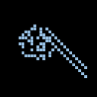
Formiga de LangtonAutômato celularDez mil passos de caos e, de repente, uma rodovia que vira groove.

RecamánSequência de RecamánPara trás se puder, para a frente se não: arcos e uma melodia assombrada.
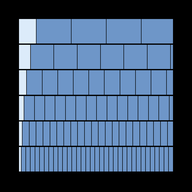
KolakoskiConjectura de KeaneUma sequência que descreve a si mesma, tocada como cânone rítmico.
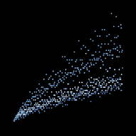
Cometa de GoldbachConjectura de GoldbachTodo par é soma de dois primos: cada número vira um acorde de anéis.
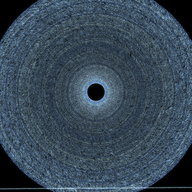
AntihydraBusy Beaver BB(6)A máquina de Turing que esconde um Collatz: b sobe 2 no par, desce 1 no ímpar, e ninguém sabe se chega a −1.
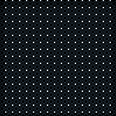
Distâncias de ErdősProblema das distâncias unitáriasPontos entram um a um; cada par à distância exata 1 é uma nota. Conjectura derrubada em 2026.
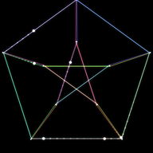
Dupla CoberturaConjectura da dupla cobertura por ciclosCiclos que passam duas vezes por cada aresta, como linhas de ônibus em polirritmia.
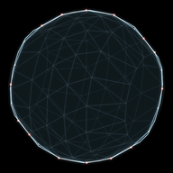
NoperthedronPropriedade de RupertA busca sem fim por um túnel: a sombra da cópia quase cabe no furo, e o som quase resolve.
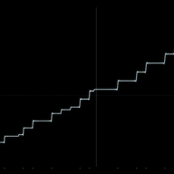
Música dos PrimosHipótese de RiemannOs zeros da função zeta, um a um, reconstroem a escada dos primos. Cada zero é uma frequência.
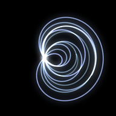
Linha CríticaHipótese de Riemann · o plano complexoUm ponto sobe pela linha ½ e a zeta o leva a uma espiral que passa pela origem em cada zero. Mova a linha e ela erra.
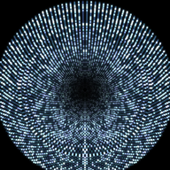
196Números de LychrelInverter e somar: o 196 nunca vira palíndromo. Os algarismos que se espelham acendem.
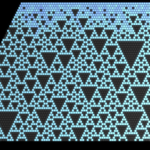
GilbreathConjectura de GilbreathA pirâmide das diferenças entre primos sempre começa com 1: uma nota pedal que nunca falha.
Física
Química
Todas as obras abrem em 3D: arraste para girar, use a pinça ou a roda para aproximar e toque duas vezes para recentrar. O botão 3D no canto (ou a tecla D) volta para a vista plana.
As obras da segunda leva (de Antihydra em diante) têm o mesmo painel: volumes, timbres e envios por elemento, delay, reverb, bit crusher, pitch delay, efeitos de vídeo e banco de configurações (teclas 1–9). Os endereços antigos (por exemplo /granizo/) continuam funcionando e levam para cá.